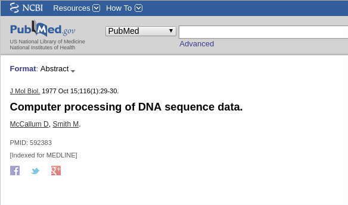
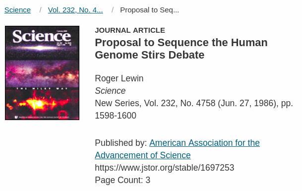

Brazilian Symposium on Bioinformatics - 2018
Waldeyr M. C. da Silva, Polyane Wercelens, Maria Emı́lia M. T. Walter, Maristela Holanda, and Marcelo Brı́gido
Structure of DNA
First digital computers
https://www-03.ibm.com/ibm/historyGenetic code
Beginning of databases history
DNA Sequencing
Relational databases
Beginning of Bioinformatics?
Human genome efforts
Personal computers
https://www-03.ibm.com/ibm/historyHuman genome efforts
- National Human Genome Research Institute (NHGRI)
- Institute for Genomic Research
Other genomes
- Haemophilus influenzae
- Saccharomyces cerevisiae
Blast
Human genome
Bioinformatics tools
Genomic data
 https://doi.org/10.1371/journal.pbio.1002195
https://doi.org/10.1371/journal.pbio.1002195
NoSQL databases
According Corbellini*:- key-value
- wide column or column families
- document-oriented
- graph databases
Graph databases
https://db-engines.com/en/ranking_trend/graph+dbmsMain graph databases
- Neo4J
- OrientDB
- Grakn.ai
How do they contribute?
- Infering knowledge from existing relationships
- Represent relationships from a previous data knowledge
Main fields
- Transcriptome analyses
- Gene annotation
- Data visualization
- Data integration
- Cancer research
- Biomedical analyses
- Biological networks
Biological networks
Gene annotation
Data integration
Data integration
Data visualization

Data integration
Biological networks
Data integration

Cancer research
Biological networks
Transcriptome analyses
Data integration
Biomedical analyses
Biological networks
Biological networks